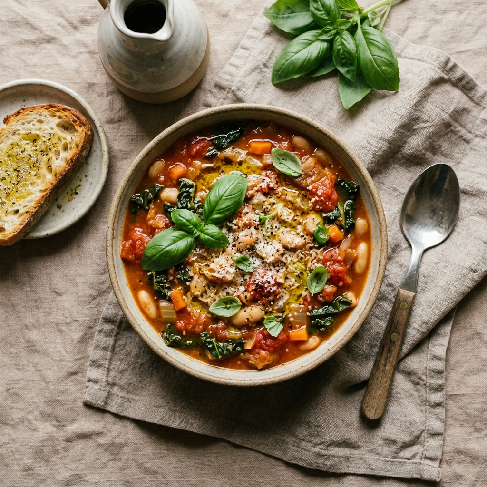
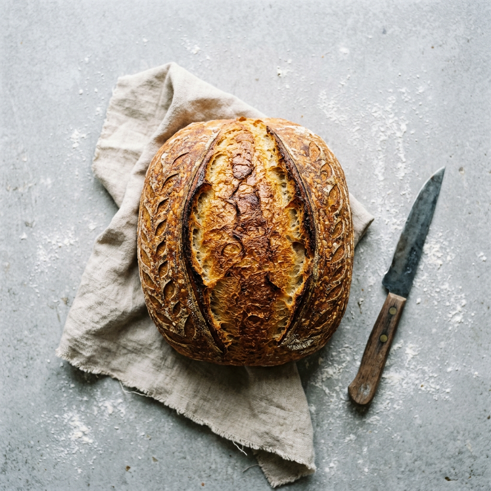
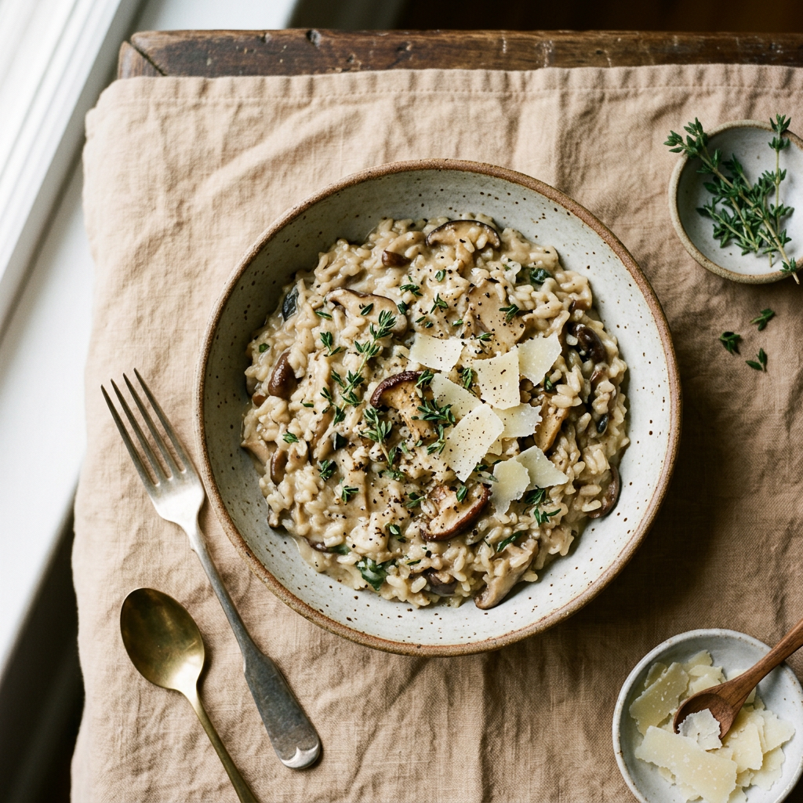
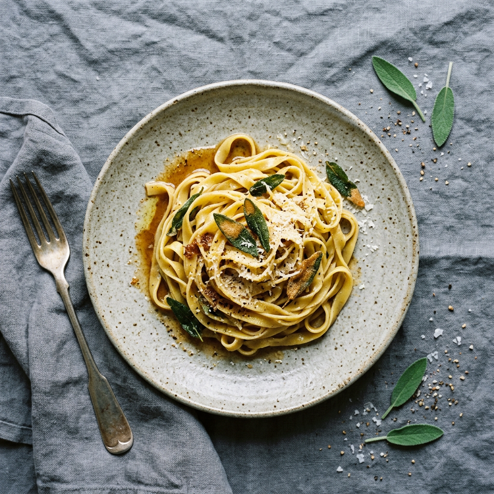

Recipe Scaler stores your recipes, recalculates them for any number of servings, and stands by while you cook — on your phone, your computer, and even offline.

This is where the app started. Set the servings — every amount updates, in the ingredient list and inside the recipe text itself. Not just a list of numbers: the instructions stay coherent.


The screen won't turn off mid-recipe. Timers run in the recipe — not in your head — and push notifications tell you when to come back. Timers work on the computer too, with the same hotkeys you already use.
No more tapping the phone with flour on your fingers.
Start one from any step. It follows you to the desktop.
Scaling is the heart. Around it: a shopping list that shares itself, import that takes anything you throw at it, and an assistant that answers like a chef standing next to you.
Add one ingredient or the whole recipe at once. Mark what you bought, sort the list your way, share it with whoever's going to the store.
Paste text, one link, or ten links. Drop in a file in almost any text format — or a photo of a cookbook page, a notebook, a handwritten journal.
Something going wrong mid-cook? It helps you save the dish, explains the recipe, suggests the next step, lists the equipment you'll need. A chef on your phone.
Find new recipes, follow interesting authors, save the good ones to your collection and build a shortlist of the best finds.
Recipe Scaler works out the numbers — kcal, protein, fat, carbs — and shows them the way you need: for the whole dish, per 100 grams, or per serving. If the AI got an ingredient wrong, fix that one ingredient and the math follows.

Download any public collection — yours or someone else's — as a beautifully formatted book: recipes with photos, ingredients and instructions. Print it, gift it, keep it.
Send the bot a recipe text or a link — it's saved. Or install the Recipe Scaler Importer extension and import in one click from any recipe site.
Connect your own AI assistant to your recipes. It can search, add, and help you cook the way you're used to — chat, voice. recipe-scaler.ru/mcp. For techies: yes, it's an MCP server.
Both platforms, automatic sync — even from offline. Hotkeys on the desktop, standard gestures on the phone. On the phone it's a PWA: install it on the home screen and it feels like any other app.
Your recipes are yours. Not training data, not analytics fodder, not a hostage.
Every "what's missing" note goes to the actual human who builds this. No queue, no form, no chatbot.